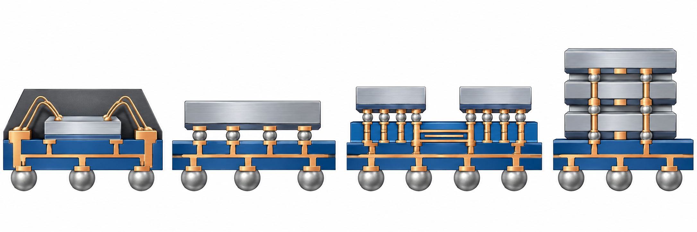
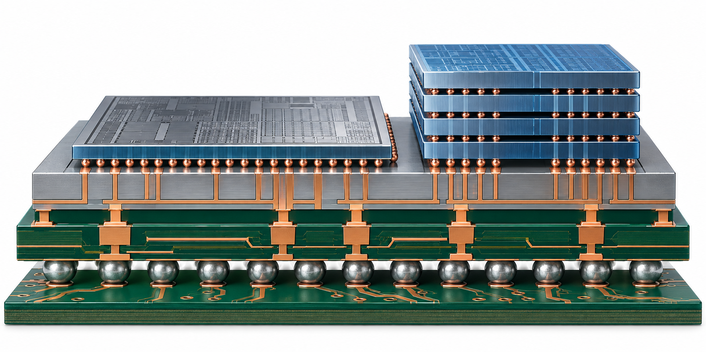

Flip-chip은 die의 bump와 substrate를 연결하고 BGA ball은 package를 PCB에 연결한다. Wire bond와 flip-chip은 연결 구조·기생·IO 배치·비용의 조건이 다르다.

왼쪽부터 wire-bond, flip-chip, 2.5D interposer, 3D 적층의 연결 방식. 배선·범프·via의 위치 관계를 보여 주는 개념 단면이며 실제 pitch·층수·두께와 재료를 고정하지 않습니다.
계산·동작 예
Signal은 die pad → bump → substrate trace/via → ball → PCB로 이어진다. Return current는 reference plane과 경계 연결 조건을 따라 닫힌 경로를 만들며 신호와 함께 분석한다.
고주파 return current를 언제나 기하학적으로 가장 짧은 길로만 설명하지 않는다. Impedance와 reference 구조가 중요하다.
die pad에서 board trace까지 경로를 추적한다.
22-2. 2.5D와 3D Integration
TSV나 hybrid bonding 같은 방법은 pitch와 경로를 바꾸지만 열·검사 접근·수율 문제도 만든다. 제품 구조에 따라 용어 사용 범위를 명확히 한다.

Logic die와 HBM stack이 interposer를 통해 연결되는 구조. 위에서 아래로 die와 microbump, interposer, package substrate, solder ball, PCB가 이어집니다. HBM 내부 TSV와 base die의 상세 연결은 단순화했습니다.
계산·동작 예
적층 전 각 die를 검사할 수 있는지와 최종 조립 후 내부 연결을 검사할 수 있는지를 나눈다. 열을 내는 die의 위치와 heat path도 함께 본다.
연결 밀도가 높아졌다는 이유로 시스템 비용과 yield가 항상 개선된다고 가정하지 않는다.
연결 밀도·열·검사·수율의 trade-off를 설명한다.
22-3. Chiplet과 Die-to-Die
분할 경계의 bandwidth·latency·power·coherence·test 조건을 정의해야 한다. UCIe 같은 die-to-die 규격은 연결 계층의 역할과 상호운용 범위를 정한다.
계산·동작 예
Compute와 IO die를 분리하면 각 die의 공정 선택을 달리할 수 있지만 추가 link와 package, 검증 비용이 생긴다. Monolithic 기준과 같은 workload에서 비교한다.
Die-to-die 링크가 on-chip wire와 동일한 지연·전력이라고 가정하지 않는다.
on-chip/off-chip/die-to-die의 경계를 구별한다.
22-4. HBM과 Co-Design
Memory controller와 PHY의 배치, channel 할당과 실제 traffic이 시스템 효율에 영향을 준다.
Compute–HBM의 물리적 근접성과 넓은 연결이 높은 대역폭을 가능하게 합니다. 실제 성능은 channel 수·데이터 rate·controller 효율·열 조건·traffic locality를 함께 계산합니다.
계산·동작 예
Compute가 요구하는 byte/cycle을 먼저 구하고 HBM channel과 내부 interconnect가 이를 공급하는지 본다. 용량이 맞아도 bank 접근과 traffic 분포가 제한이 될 수 있다.
HBM 표기 bandwidth를 application의 지속 처리량과 동일시하지 않는다.
대역폭과 배치/열 조건을 함께 계산한다.
22-5. Package와 Board SI/PI
PDN에는 source·plane·via·decap과 부하의 시간 변화가 포함된다. Signal과 return path의 불연속을 같이 추적한다.
계산·동작 예
Via transition에서 signal via만 보지 말고 return via와 plane 변화도 확인한다. 측정·추출 모델의 경계가 중복되거나 빠지지 않게 한다.
각 모델이 개별적으로 유효해도 연결 기준이 다르면 전체 결과가 잘못될 수 있다.
모델 경계와 필요한 측정·추출 항목을 찾는다.
22-6. Thermal과 기계적 신뢰성
Thermal resistance의 단순 정상상태 모델과 시간 응답 모델을 구분한다. Package의 열팽창과 응력은 warpage·접합 신뢰성과 연결된다.
계산·동작 예
단순 모델에서 ΔT=P×Rθ를 사용하되 Rθ가 어떤 경계와 조건에서 정의되었는지 확인한다. Board·airflow가 달라지면 같은 숫자를 그대로 적용할 수 없다.
평균 die temperature가 낮다고 local hotspot도 안전하다고 단정하지 않는다.
모델 가정과 실측 조건을 분리한다.
22-7. 패키지 선택과 인계
Bump map·pinout·stackup의 revision을 맞추고 방향·좌표 기준을 명시한다. 변경은 PCB·die·test의 영향을 함께 추적한다.
계산·동작 예
한 power ball을 signal로 바꾸는 변경은 배선만이 아니라 전원 분포와 return path, test 접근까지 영향을 줄 수 있다.
Pin 이름이 같다는 것만으로 die/package/board의 방향과 실제 연결이 맞다고 보지 않는다.